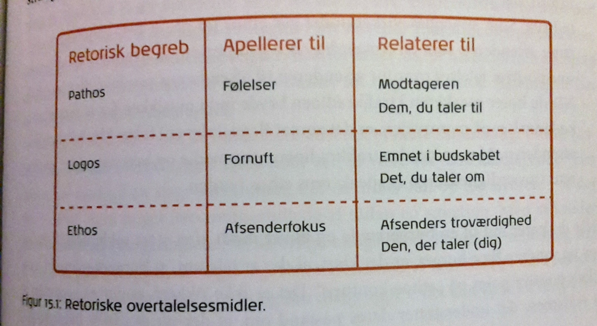
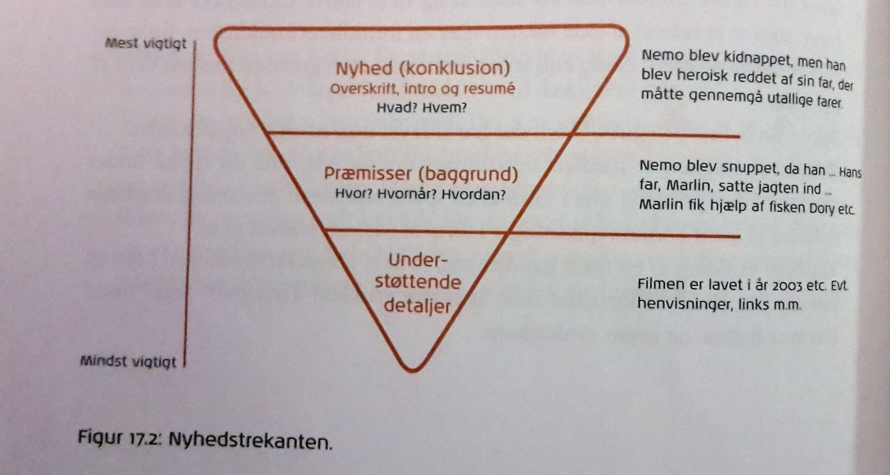
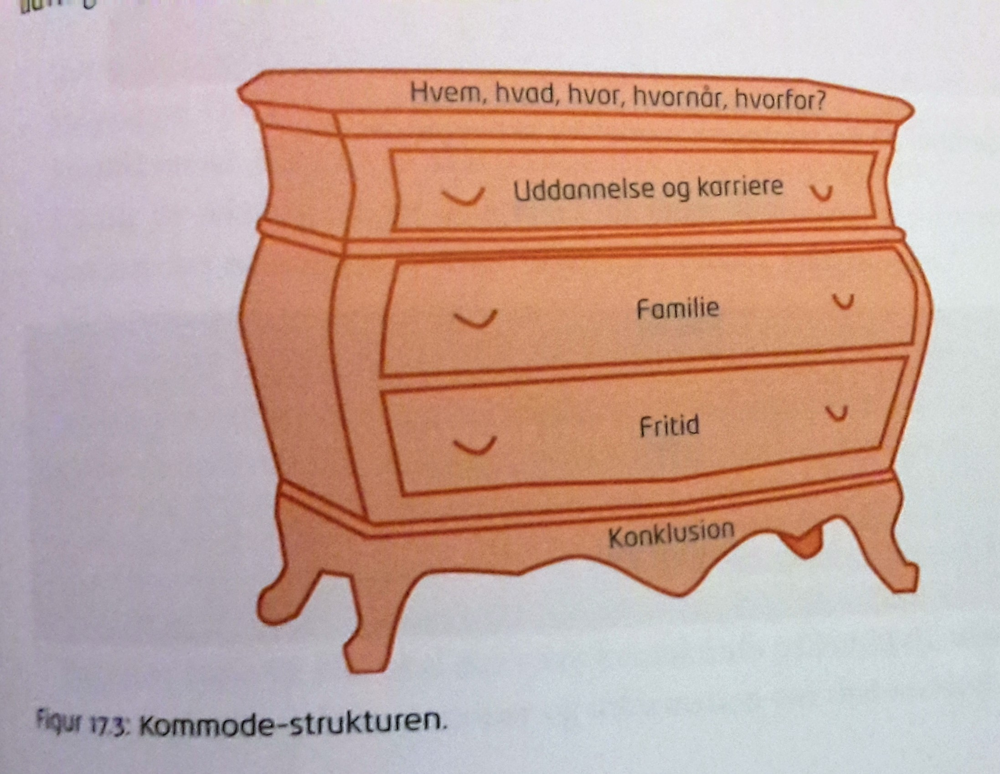
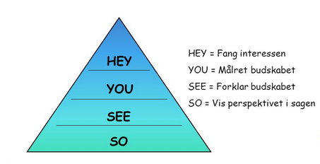
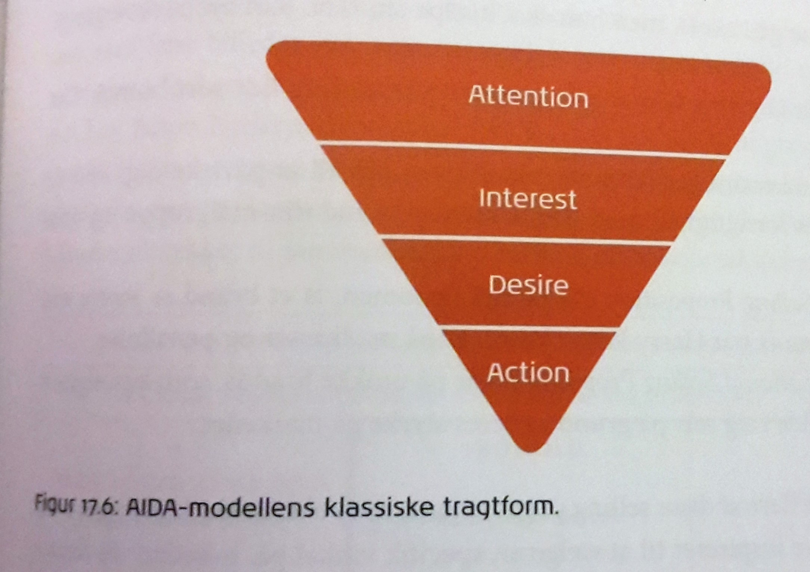

Retorisk kommunikationsstrategi

Retorik handler om de metoder, der bruges til at formidle et budskab på en overbevisende måde, så modtageren påvirkes. I retorik bruges begreberne ethos, pathos og logos.
•Ethos appellerer til afsenderfokus og er altså afsenderens troværdighed.
•Pathos appellerer til følelserne og altså den emotionelle effekt der skabes hos modtageren.
•Logos appellerer til fornuften og dermed budskabets emne.
Nyhedskriterier
Jo flere nyhedskriterier en tekst lever op til, des mere relevant er den for målgruppen. Der er fem nyhedskriterier og for at kunne vurdere disse kriterier, er det nødvendigt at kende sin målgruppe godt:
Inddeling af stof
Overordnet set kan man inddele stoffet i tre kategorier:
Kilder
Når der skal produceres indhold på baggrund af kilder, skal man passe på med:
Billeder
Der skal vurderes billeder ud fra journalistiske principper, hvis der arbejdes journalistisk. Her er to kategorier:
Opsætning
Der skal være overblik over de fagtermer, journalister anvender når der tales om teksten opsætning:
Artiklen

Den klassiske artikel er en samlet betegnelse for en kortere, afsluttet, selvstændig behandling af et emne. Teksten kan være fagligt berørt eller den kan være skrevet fra en personlig vinkel, og det er normalt i en artikel at ikke alt læses før der nås en konklusion.
Nyhedsartiklen
Læseren får et godt overblik, dernæst føres læseren gennem artiklen og, såfremt at artiklen er godt skrevet, behøver læseren ikke at læse hele artiklen, men kan stoppe ca. halvvejs, fordi alle de væsentligste ting er forklaret.
Den subjektive artikel

I denne slags artikel får læseren mulighed for selv at udvælge og dermed undgå at læse alt.
Produkt- eller emneartiklen

Denne type artikel hjælper læseren og skrives ofte for at opnå et adfærdsresultat – call to action. Der kan med fordel bruges Hey-You-See-So-modellen.
Brochuren
Her skal indholdet struktureres grundigt. En måde at opbygge en brochure på (her med udgangspunkt i en lampeforretning):
Annoncen
Dette medie skal tale hurtigt og præcist til sin målgruppe. Her bruges den klassiske AIDA-model:

Attention: først skal der skabes opmærksomhed om budskabet.
Interest: er budskabet stærkt nok, skabes der interesse.
Desire: interessen skaber måske et ønske hos modtageren, om at eje produktet
Action: Det springende punkt er at få modtageren til at købe produktet, og dermed budskabet.
Selve teksten skal skrives så den passer til indholdet og målgruppen. Her kan overvejes følgende strategier:
Tekster til web
Her gælder det om at fange læserens opmærksomhed med det samme; her skal hurtigt levere, ikke bare klare artikler, men også klare links til det målgruppen søger. Desuden er det nødvendigt at skabe en brugervenlig platform. Informationerne deles i korttekst og heltekst: